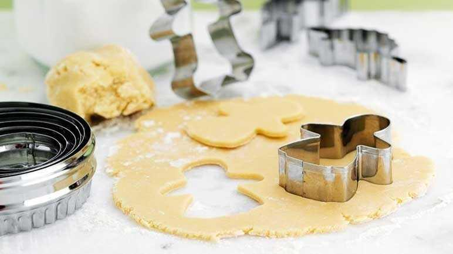

Bisquit

Desription
This easy biscuit recipe will be your new go-to for a tasty treat. If you add anything or make any substitutions to our easy biscuit recipe drop a comment in the ingredients swap.
Ingredients
- 200 g unsalted butter, softened
- 200 g white caster sugar
- 1 medium egg, lightly beaten
- 400 g plain flour, plus extra for dusting
Steps
- In a large mixing bowl, use an electric whisk to cream the butter with the sugar until well mixed and just creamy in texture. Do not overwork, or the biscuits will spread during baking.
- Beat in the egg until well combined. Add the flour and mix on a low speed until a dough forms. Gather the dough into a ball, wrap in cling film and chill for at least 1 hour.
- Preheat the oven to 190°C, fan 170°C, gas 5. Put the dough on a lightly floured surface and knead briefly, then roll out to 3mm thick. Cut, by hand or with cookie cutters, to your desired shape. Using a palette knife, transfer the biscuits to a baking tray lined with baking parchment.
- Bake for 12-14 minutes, depending on the size of your biscuits, until golden brown at the edges. Remove from the oven and transfer to a wire rack to cool.